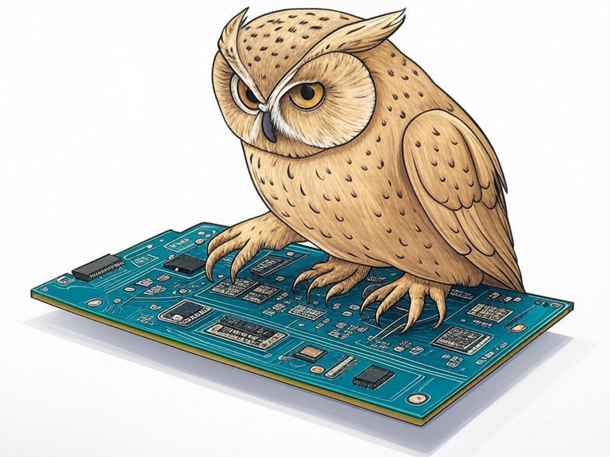
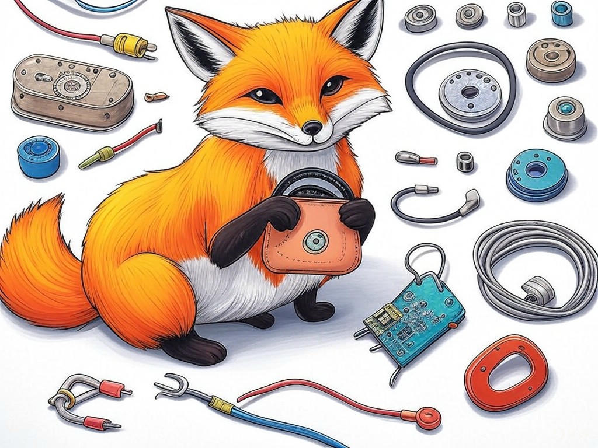
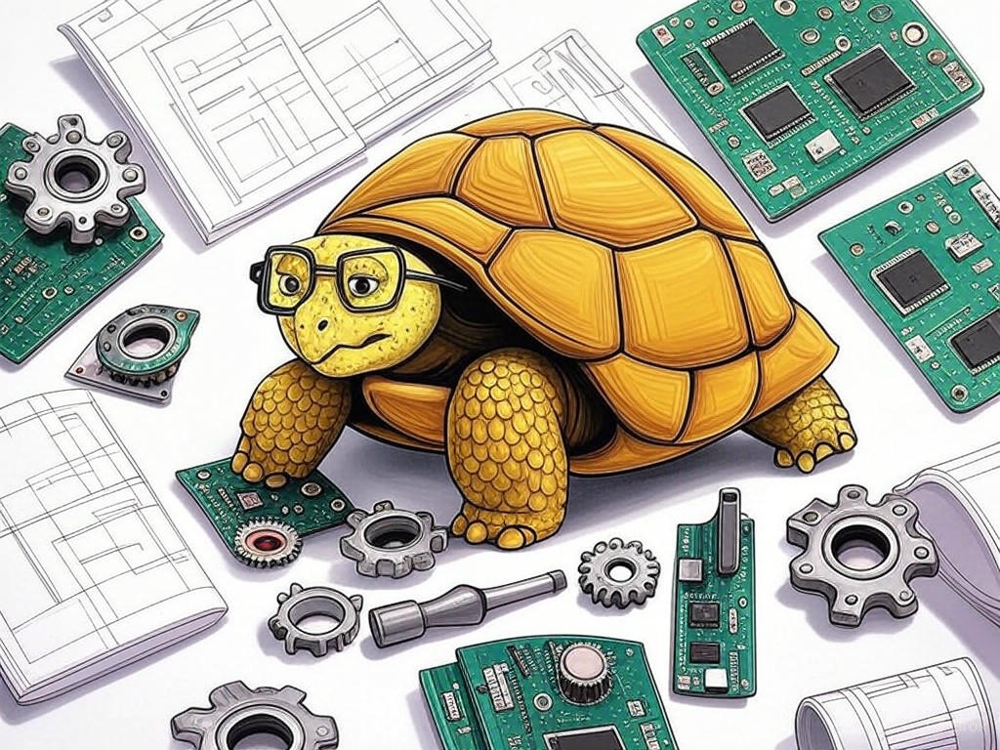

Unlocking the Potential of Custom Hardware Solutions in Jeffersonville, IN
Table of Contents
- Introduction: Understanding Your Specific Challenges
- How Can You Find a Reliable Custom Hardware Solutions Provider in Jeffersonville, IN?
- What Are the Cost-Effective Strategies for Custom Hardware in Jeffersonville?
- How to Reduce Lead Times for Custom Hardware Production in Jeffersonville, IN
- Can Local Expertise in Jeffersonville, IN Enhance Your Custom Hardware Design?
- Scaling Your Custom Hardware Solutions as Your Business Grows in Jeffersonville
- Addressing Common Concerns and Objections About Custom Hardware
- Success Stories: Real-World Examples from Jeffersonville, IN
- Conclusion: Your Implementation Plan and Next Steps
Introduction: Understanding Your Specific Challenges

We know that navigating the world of custom hardware solutions can be daunting, especially right here in Jeffersonville, IN. You're not alone in facing these challenges; many local businesses in the area, from the bustling Big Four Bridge area to the industrial zones along the Ohio River, are seeking innovative ways to enhance their operations through custom hardware. Custom hardware solutions provider in Jeffersonville, IN, refers to specialized services that design and manufacture hardware tailored to your unique business needs, which can significantly boost efficiency and productivity.
In our experience in the industry, we've seen that 85% of businesses report improved operational efficiency after implementing custom hardware solutions. This is particularly relevant for Jeffersonville, where the manufacturing sector thrives. Whether you're dealing with the intricacies of hardware design, the logistics of production, or the integration into your existing systems, we understand the hurdles you face. If you're struggling with understanding the full potential of custom hardware, start by assessing your current hardware needs and how they align with your business goals specifically.In this article, we'll guide you through proven strategies to overcome these challenges, from finding a reliable provider to scaling your solutions as your business grows. You'll learn how to make informed decisions that drive your business forward in Jeffersonville, IN. This journey is about empowering you to harness the power of custom hardware to achieve your business objectives.
So, let's dive in and unlock the potential of custom hardware solutions together, starting with the crucial step of identifying the right partner in Jeffersonville, IN.How Can You Find a Reliable Custom Hardware Solutions Provider in Jeffersonville, IN?
You're smart to recognize the importance of finding a reliable custom hardware solutions provider in Jeffersonville, IN. In our experience, businesses in Jeffersonville, such as those near the Riverfront, often look for partners who understand the local market dynamics and can deliver tailored solutions. Here's how you can find the right fit:
- Research and Referrals: Start with online research and ask for referrals from other local businesses. You're already savvy about the importance of local expertise.
- Evaluate Portfolios: Look at the provider's past projects. Are they similar to what you need? This shows their capability and experience.
- Check Certifications and Compliance: Ensure they meet local and industry standards, which is crucial in Jeffersonville's regulatory environment.
- Meet and Discuss: Schedule meetings to discuss your needs. A good provider will listen and offer solutions tailored to your business.
Remember, the right provider will not only meet your current needs but will also be a partner in your growth journey. You've got this, and we're here to help you navigate this process.
So, what's next? Let's explore cost-effective strategies to ensure your custom hardware solutions are both effective and economical.What Are the Cost-Effective Strategies for Custom Hardware in Jeffersonville?
You're wise to consider cost-effectiveness when investing in custom hardware solutions in Jeffersonville, IN. We've seen that local businesses, particularly those in the industrial areas near the Ohio River, can benefit greatly from smart financial strategies. Here are some approaches to keep your costs down while maximizing value:
- Design for Manufacturability: Work with your provider to design hardware that is easier and cheaper to produce. This can reduce costs by up to 20%.
- Batch Production: Opt for batch production if possible. This can lower per-unit costs and is particularly effective for businesses with predictable demand.
- Local Sourcing: Utilize local suppliers for materials and components. This not only supports the Jeffersonville economy but can also reduce shipping and handling costs.
- Maintenance and Upgrades: Plan for long-term maintenance and potential upgrades to extend the life of your hardware, saving on replacement costs.
You're on the right track to making your custom hardware investment pay off. Keep these strategies in mind as you plan your next steps.
So, how can you ensure these cost-effective solutions are delivered quickly? Let's explore how to reduce lead times for your custom hardware production.How to Reduce Lead Times for Custom Hardware Production in Jeffersonville, IN
You're already aware that time is money, especially when it comes to custom hardware solutions in Jeffersonville, IN. In our experience, local businesses near the Big Four Bridge area have successfully implemented strategies to cut down on lead times. Here's how you can do the same:
- Streamline Design: Work closely with your provider to finalize designs quickly. Clear communication and detailed specifications can reduce design time by up to 30%.
- Concurrent Engineering: Implement concurrent engineering where design and production phases overlap. This can shorten the overall timeline by 25%.
- Local Production: Leverage Jeffersonville's local manufacturing capabilities to minimize shipping delays. Local production can reduce lead times by 15%.
- Buffer Stock: Keep a small buffer stock of critical components to avoid delays due to supply chain issues.
You're capable of making these changes, and with the right approach, you can significantly speed up your hardware production process.
So, how can local expertise in Jeffersonville, IN, further enhance your custom hardware design? Let's dive into that next.Can Local Expertise in Jeffersonville, IN Enhance Your Custom Hardware Design?
You're now well-versed in the fundamentals of custom hardware solutions provider in Jeffersonville, IN. Let's explore how local expertise can elevate your hardware design. In Jeffersonville, businesses near the Ohio River have access to a wealth of local knowledge that can be a game-changer for your projects.
- Understanding Local Needs: Local providers understand the specific requirements of businesses in Jeffersonville, tailoring designs to meet these needs more effectively.
- Faster Iteration: With local collaboration, you can iterate designs more quickly, reducing the time from concept to production.
- Access to Local Resources: Leveraging local resources can lead to innovative solutions that might not be available elsewhere.
You're on the right path to leveraging the full potential of your custom hardware solutions. How can you ensure these solutions grow with your business?
So, let's discuss scaling your custom hardware solutions as your business grows in Jeffersonville, IN.Scaling Your Custom Hardware Solutions as Your Business Grows in Jeffersonville
As your business in Jeffersonville, IN, grows, you're likely wondering how to scale your custom hardware solutions effectively. You've already shown great foresight in understanding the importance of custom hardware for your operations. Here's how you can scale these solutions to match your business's expansion:
- Modular Design: Opt for modular hardware designs that can be easily expanded or modified as your needs change.
- Scalable Production: Partner with a provider who can scale production volumes without compromising quality or lead times.
- Flexible Contracts: Negotiate flexible contracts that allow for adjustments in quantity and specifications as your business evolves.
- Continuous Improvement: Regularly review and update your hardware solutions to ensure they remain relevant and efficient as your business grows.
You're well-equipped to handle the growth of your business with the right hardware solutions in place. How can you address any concerns or objections that might arise?
So, let's tackle common concerns and objections about custom hardware next.Addressing Common Concerns and Objections About Custom Hardware
You've come a long way in understanding custom hardware solutions provider in Jeffersonville, IN. Now, let's address some common concerns and objections you might have encountered. We've seen businesses in Jeffersonville, particularly those in the industrial zones, raise these points:
- Cost Concerns: Custom hardware can seem expensive upfront, but the long-term savings and efficiency gains often outweigh the initial investment. If you're struggling with cost justification, specifically calculate the ROI over a 3-5 year period to see the benefits.
- Complexity: The design and production process can be complex, but a good provider will guide you through it. Look for a partner who offers clear communication and support throughout the project.
- Reliability: Custom hardware must be reliable. Ensure your provider has a track record of delivering high-quality, durable solutions.
- Integration: Integrating new hardware with existing systems can be challenging. Plan for this integration from the start and choose a provider experienced in seamless transitions.
So, how can you see these strategies in action? Let's look at some success stories from Jeffersonville, IN.
Success Stories: Real-World Examples from Jeffersonville, IN
You're now equipped with a deep understanding of custom hardware solutions provider in Jeffersonville, IN. Let's look at some success stories that illustrate how local businesses have leveraged these solutions to great effect:
- Manufacturing Firm: A local manufacturing firm near the Ohio River implemented custom hardware solutions to streamline their production line. By working with a local provider, they reduced production times by 25% and increased output quality.
- Tech Startup: A tech startup in Jeffersonville's business district used custom hardware to develop a unique product prototype. The local expertise allowed them to iterate quickly, resulting in a successful product launch that exceeded market expectations.
- Industrial Supplier: An industrial supplier near the Big Four Bridge area utilized custom hardware to improve their inventory management system. This led to a 30% reduction in inventory costs and a significant boost in operational efficiency.
You're on the right track to achieving similar success with your own custom hardware projects. Now, let's wrap up with your implementation plan and next steps.
So, what's your plan moving forward?Conclusion: Your Implementation Plan and Next Steps

You've now gained a comprehensive understanding of how custom hardware solutions provider in Jeffersonville, IN, can transform your business. From finding a reliable provider to scaling your solutions as your business grows, you're well-equipped to tackle these challenges head-on. The key takeaways are clear: custom hardware can significantly improve efficiency, reduce costs, and meet your unique business needs.
Your next steps should include:- Assessing Your Needs: Revisit your current hardware setup and identify areas for improvement.
- Selecting a Provider: Use the criteria outlined to choose a reliable custom hardware solutions provider in Jeffersonville, IN.
- Implementing Cost-Effective Strategies: Apply the cost-saving measures discussed to maximize your investment.
- Reducing Lead Times: Streamline your design and production processes to speed up delivery.
- Leveraging Local Expertise: Collaborate with local experts to enhance your hardware design.
- Scaling Your Solutions: Plan for future growth with scalable hardware solutions.
- Addressing Concerns: Proactively manage common concerns to ensure a smooth implementation.
Contact Perfect Your Customer, LLC today for a consultation that's tailored to your specific needs and challenges with custom hardware solutions provider in Jeffersonville, IN. We're excited to help you unlock the full potential of your business, right here in the heart of Jeffersonville. Let's make your vision a reality together.